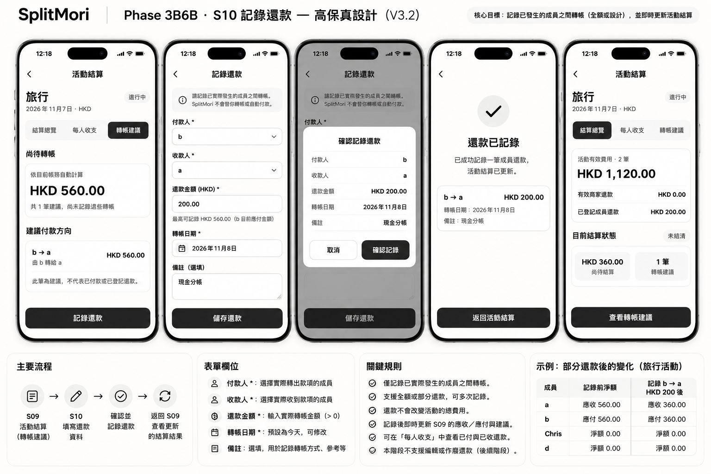
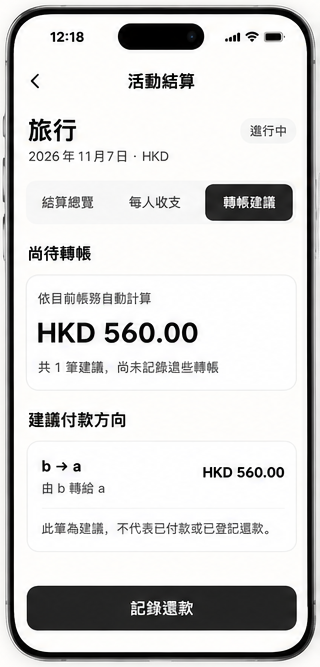
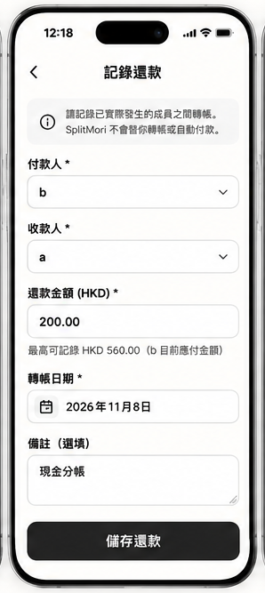
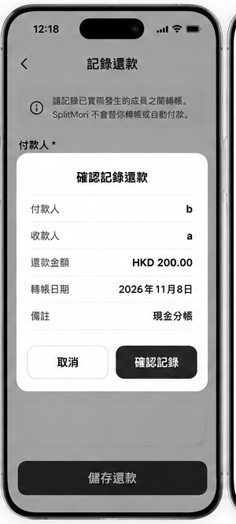
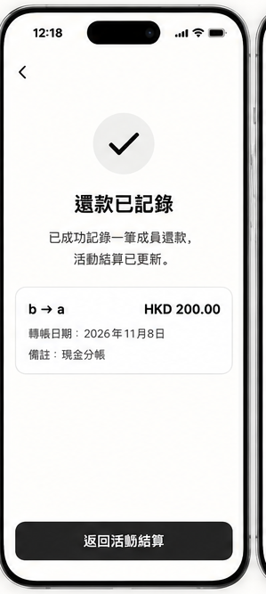
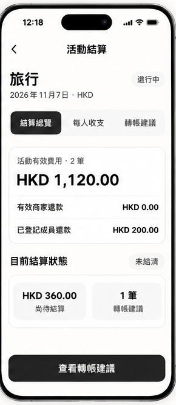

SplitMori · S10 記錄還款
Phase 3B6B · 使用者已批准的 V3.2 高保真。此檔僅為視覺與流程參考，不含真實帳務互動或付款能力。頁面數字皆為示例，正式 App 必須從 SQLite 真實帳本獲取。






開發時必須守住的規則
- S09 的建議只是建議；用戶已在現實中轉帳，才可提交記錄。
- 預填付款人、收款人和建議金額；允許部分還款及當天/實際日期、備註。
- 二次確認必須寫「此操作只會記錄轉帳，不會代你轉帳。」
- 同一次提交 ID 幂等，超額與競態寫入在 SQLite 交易內拒絕。
- 真實已完成活動亦可登記還款，不更動歷史費用與活動總額。
- 示例 b → a HKD 200 後，應收應付從 560 降到 360；有效費用 1,120 不變。
- 錯誤還款事件「作廢 + 重登」UI 保留下一小階段。